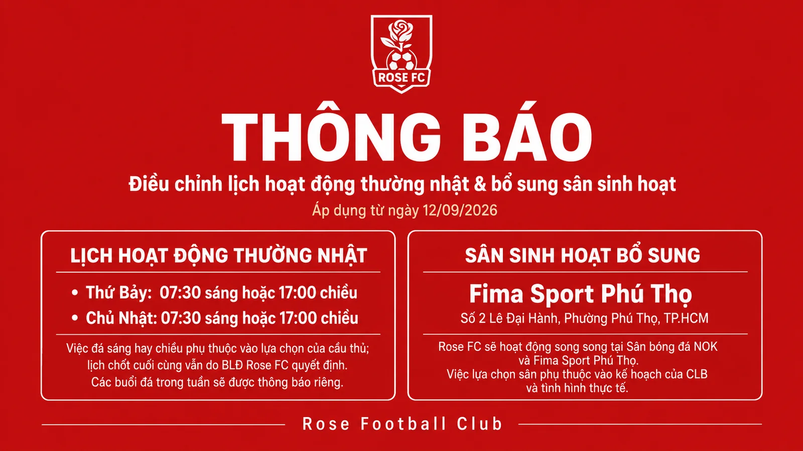

Điều chỉnh lịch hoạt động thường nhật & bổ sung sân sinh hoạt
Sau khi kỳ nghỉ hè kết thúc và các cầu thủ trong độ tuổi học sinh quay trở lại trường, Rose FC điều chỉnh lịch hoạt động thường nhật từ ngày 12/09/2026, đồng thời bổ sung thêm một sân sinh hoạt nhằm tạo sự thuận tiện hơn trong việc di chuyển.

Thông báo chính thức · Rose Football Club · Áp dụng từ 12.09.2026
Kỳ nghỉ hè đã kết thúc và các cầu thủ trong độ tuổi học sinh bắt đầu quay trở lại trường. Vì vậy, như thường lệ, Rose FC sẽ điều chỉnh lịch hoạt động thường nhật để phù hợp hơn với thời gian học tập và khả năng tham gia của thành viên.
Lịch hoạt động thường nhật từ 12/09
Lịch cuối tuần
Buổi sáng
Buổi chiều
Lịch cuối tuần
Buổi sáng
Buổi chiều
Việc tổ chức buổi sinh hoạt vào buổi sáng hay buổi chiều sẽ được cân nhắc dựa trên lựa chọn và khả năng tham gia của các cầu thủ. Tuy nhiên, lịch chốt cuối cùng vẫn thuộc quyết định của Ban Lãnh đạo Rose FC, dựa trên kế hoạch hoạt động và tình hình thực tế.
Bổ sung sân sinh hoạt mới
Nhằm tạo thêm sự thuận tiện trong việc di chuyển cho một số thành viên, bên cạnh Sân bóng đá NOK, Rose FC chính thức bổ sung thêm một địa điểm sinh hoạt.
Fima Sport Phú Thọ
Số 2 Lê Đại Hành, Phường Phú Thọ, TP.HCM
Khu vực nằm bên trong Khu thể thao Phú Thọ, Quận 11 cũ. Một số tuyến đường nội bộ xung quanh hiện đang trong quá trình thi công.
Việc bổ sung Fima Sport Phú Thọ không đồng nghĩa Rose FC chuyển hoàn toàn khỏi sân NOK. Hai địa điểm sẽ được sử dụng song song.
Sân được lựa chọn cho từng buổi sẽ phụ thuộc vào lịch sân, nội dung hoạt động, khả năng di chuyển của thành viên và những tính toán thực tế của CLB.
Rose FC tiếp tục điều chỉnh cách vận hành theo tình hình thực tế, với mục tiêu duy trì lịch sinh hoạt ổn định nhưng vẫn phù hợp với đời sống học tập và công việc của các thành viên.
Rose Football Club · Together We Grow.